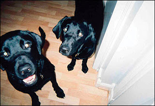

There's no way to know how badly things would have gone at the Berwyn Heights, Maryland home of Cheye and Trinity Calvo if Amir Johnson hadn't shown up when he did.
Johnson, a private on the local police force, was making his accustomed rounds in the neighborhood when he saw a swarm of heavily armed men laying siege to the Calvo home. Inside, Cheye and his mother-in-law, Georgia Porter, were being held face-down at gunpoint with their hands tied behind their backs. The Calvo family's two black Labradors, Chase and Payton, were dead from gunshot wounds. The assailants who killed the dogs were leaving bloody bootprints throughout the home.
This home invasion was, of course, a law enforcement operation, typical of "no-knock" drug raids conducted practically every day across the country. The most significant difference wasn't that Cheye Calvo was completely innocent of involvement with narcotics; innocent people are terrorized and killed by drug raiders all the time. The key distinction here is that Mr. Calvo is Mayor of Berywn Heights. That's one reason why Officer Johnson intervened to help.
"That guy in there is crazy," one of the stormtroopers complained to Johnson as he emerged from the crime scene (that is, the scene of a crime committed under color of state "authority"). "He says he's the Mayor of Berwyn Heights."
"That is the Mayor of Berwyn Heights," Johnson told assailant, a member of the Prince George's County police department (which has overlapping jurisdiction with the town police). Johnson quickly contacted Berywn Heights Police Chief Patrick Murphy to tell him that a SWAT team had just laid waste the the Mayor's home and killed the family's dogs. Glancing around, he couldn't see any evidence of a search warrant. Inquiries about this omission were greeted with the assurance that the document was "en route."
Then, rather than continuing on his daily rounds, Officer Johnson stayed put, in order to make sure that Mayor Calvo and his mother-in-law weren't mysteriously hurt or killed.
"Not that I don't trust the police," Johnson later commented to the Washington Post. "But I wanted to personally witness what [was] going to happen to my mayor, so if they [the SWAT team] say this guy went for a gun -- and he didn't -- it's not going to happen on my watch."
Roll that comment around in your mind for just a second.
Officer Johnson stayed behind to make sure his mayor wasn't murdered by his fellow police officers. A few days later, long after the raiders failed to find so much as a molecule of evidence to justify their criminal assault on the Calvo home, Chief Murphy publicly expressed exactly the same sentiments. Addressing a rally on behalf of the victims, Murphy pointed out that the SWAT team declined to notify him about the impending raid, which would have permitted the Chief to help them arrange a peaceful, orderly search of the property.
"I never imagined, when I set out to protect people from the crooks and criminals, that I would have to protect them from by fellow police officers," Murphy regretfully declared. Granted, it's entirely unfair to consolidate cops and crooks into one undifferentiated group. Police are far more dangerous to innocent people.
***
***
Prior to the assault on the Calvo family last July 29, narcotics investigators had discovered that local drug dealers had been shipping drug-laden packages to the addresses of innocent people and then intercepting the packages before the residents picked them up. In mimicrky of that tactic, drug investigators deposited a package on the Calvo family's front step, and then sent in a SWAT team to collect it.
Prince George's County Police officials later maintained that the forcible entry -- the use of a battering ram to break down the door, followed by the cuffing of Calvo and his mother-in-law, Georgia -- was "justified" because Georgia let out a scream when she saw masked, heavily armed men scurrying across the front lawn.
Apparently, being terrified when confronted by state thugs employing terrorist tactics justifies the use of those tactics. In a variation on that rationale, police officials insisted that killing the dogs was the proper course of action because the labs "engaged" the SWAT team by barking at them.


Rest in peace, Payton and Chase.There's no evidence that either dog bit or otherwise harmed or threatened the police; in fact, one of them was shot from behind, which would make it terribly unlikely that the dog had "engaged" the SWAT team. A thorough inspection of the home turned up only one item worth confiscating: The same box of marijuana the narcotics officers had planted on the Calvo family's doorstep. Nobody involved in ordering or executing the raid has been fired, sanctioned, or punished in any way. Georgia continues to show symptoms of post-traumatic stress disorder. The Calvo family lost their dogs, and had to spend countless hours scrubbing the bloodstains from their home.

After having their lives thrown into violent disarray by the raid, Cheye and Trinity -- with the help of a very astute attorney -- had to take pre-emptive measures to protect their reputations following the raid. They got no help at all from the Prince George's County Police. Displaying the familiar mixture of arrogance and contempt that suppurates from police bureaucrats in such circumstances, Chief Melvin C. High and Sheriff Michael Jackson (no, really) refused to apologize to the Calvo family or publicly exonerate them after the police had apprehended the people responsible for the drug package scheme.
As Calvo points out, "police can do what they did to us with impunity. There are no consequences, not for them." But once again, it could have been immeasurably worse. Imagine how the same incident might have turned out had Cheye Calvo not been the mayor, and had Officer Johnson not been willing to keep the SWAT team under surveillance. Johnson himself points out that Calvo could conceivably have been murdered by the uniformed marauders as a way of justifying the raid after the fact. Another possibility is that "evidence" could have easily been "discovered" to justify the seizure of the Calvo family's home for the purpose of forfeiture -- which is the entire purpose of such raids in the first place.
This year, Price George's County expects to spend $2.5 million collected last year through drug-related forfeiture. Drug enforcement raids of the kind that terrorized the Calvo family have no documentable impact on the availability of drugs. They do, however, help generate revenue for local governments. Here's how the racket functions:
Special enforcement units round up small-caliber drug users or dealers for use as informants and provocateurs; these "reliable informants" then provide tips that are used to justify no-knock raids on people identified as drug dealers. This leads to the seizure of cash or valuable assets that can be stolen in the name of "civil asset forfeiture," thereby slopping tax-feeder troughs that may start running low as the current depression unfolds.
Maryland, one of the most government-afflicted states in the Union, has likewise been plagued with this variety of corrupt, predatory "drug enforcement." Just recently, the wire services carried news of a lawsuit filed by Daryl A. Martin, a 35-year-old football coach who was accosted on the streets of Baltimore by an "elite" Special Enforcement Team (SET) of the notorious Baltimore Police Department.
Martin recalls that he was on the way to a tailor shop when he was pulled over and swarmed by several police officers, who -- without probable cause or even bothering to supply a reason -- searched his car and then subjected him to what amounted to a public strip search.
After frisking Martin's buttocks and genitals through his clothing -- while making lewd and disgusting comments -- Officer Shakil Moss reportedly forced Martin to strip below the waist, then, after putting on a clear plastic glove, performed a body cavity search in front of a stunned crown of onlookers. Martin, understandably, describes the experience as akin to being raped.
"I think this group of officers randomly pulled over and searched dozens of people a day," comments Martin's attorney, Steven D. Silverman. "If they found something, the altered the statement of charges to make [the search] appear constitutional. If they found nothing, they would send you on your way." Martin's suit against the Baltimore PD is the second to be filed in the wake of the now-disbanded SET's rampage.
Even before the suits were filed and the team was closed down, dozens of cases built on evidence and testimony provided by the SET were thrown out. But so far, none of the officers has been cashiered from the force; instead, they were simply handed new assignments. While relatively uncommon, incidents of this kind are not aberrations; they are the logical, predictable result of the incentive schedule produced by the Regime's "War on Drugs."
Conducting drug raids is immensely lucrative and (official propaganda notwithstanding) exceptionally low-risk. And there are no significant negative career repercussions for most police officers who make mistakes -- even when they involve well-respected civic officials like Cheye Calvo. If the Anointed One's "stimulus package" passes intact, we're likely to see a huge escalation in officially sanctioned criminal violence of the kind suffered by Daryl Martin and the Calvo family.

Gotta keep the tax-feeders fat and happy: Iowa Senator Tom Harkin (left) joins law enforcement lobbyists at a press conference demanding billions more for the fraudulent, murderous War on Drugs.
Obama's $900 billion wad of socialist boodle includes $3 billion for the federal Byrne Justice Assistance Grant program, as well as another $1 billion to revive the Clinton administration's Community Oriented Policing (COPS) program. Both of those initiatives will expand federal subsidies of -- and, thereby, federal control over -- "local" law enforcement, thereby further diminishing whatever remains of local accountability. The Byrne Grant program is the deadlier of those two subsidies, not merely because it's significantly larger but also because its raison d'etre is to fund counter-narcotics programs.
This means more money for criminal gangs in uniform like Baltimore's Special Enforcement Team, or the Campbell County, Tennessee outfit that beat and tortured a small-time drug dealer for several hours to force him to sign a "consent" warrant for the search of his home. It means more money for tax-funded snitches, and for no-knock SWAT raids that will leave innocent people terrified or dead. It appears that we're being introduced to a new variety of Keynesian socialism. First, there was Welfare State Keynesianism, then Military Keynesianism, followed by Reconstruction Keynesianism - you know, the pleasant business of propping up foreign dictators, bombing their countries into rubble, and then ladling out "cost-plus" contracts to politically connected contractors to "reconstruct" those countries. Now we see the advent of Police State Keynesianism.
Byrne funds are disbursed as block grands to the states, which means that they are distributed at the discretion of state governments. Every effort is made to keep this process opaque by burying the specific funding mechanisms as deeply as possible.
The United States Conference of Mayors "Mainstreet Economic Recovery" Plan offers some useful clues: This wish list of "infrastructure" and "job-building" expenditures contains Byrne Grant requests from cities such as Sunnyvale, California; Hialeah, Florida; Athens, Georgia; Elizabeth, New Jersey; Albany, New York; and Akron, Ohio. Residents of those cities should make preparations for a spike in drug-related police violence.
Although the rest of us may not have the benefit of advance warning, it will be easy to deduce where the Byrne Grant funds are flowing. We'll just follow the trail of blood.
A quick personal note --
Justus Samuel Grigg was born at 9:12 a.m. on February 3rd. He's a healthy, beautiful little boy who resembles his older brother, William Wallace.
Justus and Korrin are both doing well. His arrival, and the necessary preparations for it, help explain my recent absence, for which I apologize. I am deeply grateful for all of the wonderful and thoughtful suggestions that came in reply to my request for baby names, and I promise to post photos as soon as possible.

On sale now!
Dum spiro, pugno!
47 comments:
Congratulations Will. Excellent name, though I must confess my ignorance as to the origin of the first name. My guess is a Roman historical figure, but I can't think of one at the moment.
Out of curiosity, is the name to be pronounced the same as "justice"? Because if so, you are in for trouble when he gets old enough to start saying "Justus demands it."
Congratulations Mr. Grigg! Best wishes as your family settles in. Thank you for another excellent article.
Will, congratulations to you, Korrin, and the children on little Justus's arrival! No need for the apology; I think most of us assumed that the little one's arrival was the cause of your absence, an event that, needless to say, takes great priority over this blog's update.
God bless you all on this splendid occasion!
Congratulations Mr Grigg!
BTW, in the picture of politicians, Mr Harkin, aka "Never-Met-A-Buck-I-Didnt-Like-To-Spend-For-A-Photo-Op, is the gentlemen stage left, not the person at the podium.
Congratulations Mr. Grigg !
My best wishes to you and your entire family. I am an avid reader of your blog.
Congratulations. I love the fact that it's your sixth. It's an uppercut to the jaw of the new world order.
So far, sadly, my favorite post.
Congratulations on the new addition, and the fine name he's been given.
Dear Cranky_Old..,
Is that why he has no neck just another chin...
I guess your saving SATYRICON GRIGG for your 7th child?
Congratulations, Will on that new baby boy. I trust you won't stop until you reach ten. I am the youngest of ten.
Congratulations! Glad to hear all are doing well. Louis
Congratulations Will and superb article by the way. For some reason the music "Highway to Hell" keeps repeating itself in my mind. For those who have the means to do so it might be a good time to leave the country. It's becoming more and more like a gulag here with each passing day.
Congratulations Mr. and Mrs. Grigg! And thanks for continuing to write excellent articles in spite of sleep depravity!
Another lover of liberty!
Will, congratulations to all of you for the happy arrival of the newest member of your family! It's especially good hearing that Korrin and little Justus Samuel are both doing fine. These are busy days at the Grigg household, without a doubt!!
Your current blog about the brutal, senseless, evil that the police state visited upon Cheye Calvo's family is enough to make one's blood run cold. Thank you for calling attention to this. Combined with Mr. Cheye's efforts to call attention to these constant abuses of power, perhaps that cancer known as SWAT teams will suffer at least a setback.
Congratulations on the new Son of Liberty and, once again, a great article.
Excellent write up Mr. Grigg, the delay in your commentaries only make them the sweeter to read. For myself this hits close to home as my father is involved in the war on drugs as a detective. He recently switched to this task from his rather noble duties in the police force of fire investigation and pedophile stings. I hesitate to ask what exactly he does now, all I know is that he as a different car each time I visit him now so I assume he is involved in setting people up in some way. I haven't called him out on it yet because I know the argument that will insue and want to avoid it.
All we need to do is look at the gang violence in the inner cities and the current break down of Mexico into a total war zone to see the effects of the war on drugs. Not to mention the militarization of our police.
Congrats on the new boy, we are expecting a dughter in March.
God Bless
Bob
Congratulations, Will, on the newest addition to your family----and on another outstanding article!
Personally, I would have gone with Thanatos Grigg. Congratulations, Will. May Justus' future be one where rights, liberty, justice, peace and prosperity are the norm rather than the exception.
Track down "The Last White Hope:The American Drug War" documentary it is a good one like "The End of Suburbia". Someone has to be put in all those private prisons that keep podunk one horse neckbone towns afloat. The last industry here in the golden worker's utopia is prisons and das homeland security state apparatus. Don't it make ya feel prouder n' shit?
Congratulations to you and your family, a thousand times over! Wonderful name and as always, wonderful writing.
Congratulations! I am so glad to know that both baby and momma are doing well.
Make sure to savor every second with the little guy, I'm sure you know by now just how quickly they grow...
Congratulations, Will!
I guess a new baby is sufficient justification for delaying your maintenance of your free blog site. :)
Others can induce my bi-weekly dose of rage, but you are most skillful at it.
Thanks,
Jim O'Connor
The Colony, TX
Congratulations on the new addition to your family Mr. Grigg!
I have been a faithful reader of yours since you were writing for the New American (I was a student in high school then). Then a funny thing started to happen: more and more I found that when the magazine came I would read your articles and leave the rest of the magazine untouched. I think the turning point came when they ran an anti-Iran propaganda piece, during the same-era as their tedious anti-immigration articles including one that incredibly painted Tom Tancredo as a friend of liberty! Needless to say I was surprised to learn that my friends from my construction job who came from El Salvador, Guatemala and Mexico were a bigger threat to my freedom than Dick Cheney and Harry Reid.
When I stopped seeing your articles in the New American I finally canceled my subscription, something I had been thinking of doing for a long time, but it took a couple of months to find this website. I'm glad I did, your articles have been, if anything, even better and more insightful than I had remembered them.
On a side note I have the bad luck to live in Montgomery County, Maryland, right next door to Prince George's County. I have to say that both locally and throughout the country the PG County police have one of the worst reputations in the country. Within the last two years a high-ranking man in the department with connections to DHS pulled his gun on two unarmed deliverymen and murdered one of them. Just type in "Prince George's County Police Shooting" on Google and see what comes up. The department is so bad that Human Rights Watch thought it necessary to put out a brief condemning their routine, institutionalized brutality.
Several years ago, when I still thought in terms of Party differences I assumed that Maryland would be one of the states (we are solidly Democratic) to defy the Bush Administration on Real ID. However I have come to accept that (perhaps as a consequence of living so close to the District of Corruption) we are one of the most authoritarian states in the country. Maryland State Troopers, for instance were caught infiltrating and disrupting a Baltimore group opposed to the Death Penalty.
Once again congratulations Mr. Grigg, thank you for what you have written and please keep up the good work. As a Marylander I am always appreciative when I read your exposes of the corrupt authoritarianism that infests our state.
Congratulations and all the best wishes to you and your family. Great choice of a name, too.
What? Justus Tiberius was too much of a rhyme? Congrats, Will!
How did America go from the freedom pre-1914 in deciding for each person whether they wanted to have a drink or smoke some pot to the police state today?
This sort of thing goes on constantly all over the world, so why should America be any different? You've been living the lie of freedom long before you made your first Stars and Stripes, while enslaving Black-African-Americans and the slaughtering of Native Americans.
Now you ignore dead people on your sidewalks, trample to death fellow citizens, not to mention you made torture and murder, you might as well crumple up your original Constitution and throw it away.
America is now so primed for self-destruction by lack of brain matter that the only thing keeping you afloat is the mighty American ego.
The hope the real world at large has going is that the black mass inside America's collective seemingly hollow skull is it collapses onto itself and sends you to Hell before you suicide nuke the whole planet.
Anonymous 2:22 -
Have you even bothered to read the comments posted not only in response to this article, but all of the others past as well?
The readership at this blog is under no illusions whatsoever that the United States is anything approaching "God's Chosen Country" or that it has lived up to the facade it presents to the rest of the world. Indeed, the only thing that matters to the regular readership of this blog are liberty and human dignity, concepts we believe are to be enjoyed by ALL of mankind. I do not believe that you will find a single seriously nationalist sentiment here anywhere.
Please take your vitriol to some other website where it can be targeted at people truly deserving of it and where it might do some real good (try some of the neoconservative-dominated sites like WorldNet Daily or National Review online, for starters). It's pointless to spread it here, and will only convince the regular readership that you're part of the very problem you decry.
2:22 here.
I'm quite aware of the feelings a webcaster tries to create at his/her sites. And whatever the emotion (experience or conditon) one may try to satisfy along the intentional use, one must be prepared by the response.
That the desired effect or intellectual response doesn't always measure up should not concern you in the least. Felicity feedback and backslaps are not on the tables menu these day's for the simple reason America is full of shit.
You may call for actions against your puppet masters or jump on those whom you consider annoying gadfly's, trying to annoy or rouse you and yours from collective complacency, but you are still nothing but armchair warriors.
Free speech is still alive, is it not? They are certainly doing something about freedoms in Greece (the cradle of democracy) and other lands. America won't do anything about it's selected (not voted-in) leaders and false moeny worshipping preachers and it's proxy money loving contollers, for the simple reason you will appear unpatriotic. Since 911, it has been so embedded into your weak little collective subconscience that you shitheads must now cheer at even the stupidest latenight jokes - when years ago you would've moaned or booed. It's the little things you gladiator do-goodies think doesn't matter, making you the perfect sheep.
I can take my bitterness anywhere I please, and you don't have to read it, but that what can be diatribe at times, it will only be directed at the satanic 13 stripe waving Americans.
Know this, you will not succeed in your goals for the New World Order.
"2:22 here.
I'm quite aware of the feelings a webcaster tries to create at his/her sites. And whatever the emotion (experience or conditon) one may try to satisfy along the intentional use, one must be prepared by the response."
That's where the confusion comes in anon; had you actually read any of Will's multitudinous essays decrying more or less the "satanic 13 stripe waving Americans" you mentioned (although in somewhat milder terms, admittedly...Will usually lays the smack down with more style than you appear to possess), you'd understand that your posts amount to a monumental non- sequitur.
I bet you complain about how much Pabst Blue Ribbon sucks at AA meetings too...
Oh, and congrat to you and your family Will!
"
Know this, you will not succeed in your goals for the New World Order.
3:46 PM
"
Man, did you take the short browser here? Try the archives dude, seriously...
Man, did you take the short browser here? Try the archives dude, seriously...
Given the content of his rejoinder to my post, he's obviously not interested in either rational debate between free-thinking individuals or the truth. I'd assign him the label of T-R-O-L-L and ignore him accordingly.
Read the whole story at the link, seems like they snuffed an old lady with a knitting needle, same cop. That was last year.
http://thecalifornian.com/article/20090206/NEWS01/902060302/1002
February 6, 2009
Few details in Salinas police shooting
I wonder about the training given to law enforcement over the last couple of decades by Abe Foxman's ADL and the subsequent transformation of Fed and state cops into military types who see all of us as the enemy.
God forbid you have a Constitution in your vehicle they will definitely aim down on you.
Just say no to the ADL training the FBI and local cops.
....or maybe agent provacateur-on the payroll of DHS
What happened to Daryl Martin is more shocking than what happened to Mayor Calvo, and it won't be long until strip and cavity searches are just as routine as killing dogs and breaking down doors.
Will wrote an article about Hope Steffey, the woman who was strip searched in Ohio by non-female police people. (Cannot use the word "men" lest I puke.) When Hope's strip search gained national attention due to the video on Youtube, five other women and three teenagers came forward in the same county with the same story. Despite this, the serial predators of Stark County are still free to molest because a grand jury refused to indict them.
I was stopped one night by a bored predator for no other reason than "suspicion" which was never explained because the predators no longer have to speak to the mutts and scum they stop. Having an expired license, naturally I was handcuffed and hauled off to jail. Once there, I was taken to a bathroom where I had to reveal the upper part of my body to some dyke. I don't know if I was arrested; no one really spoke to me although a non-female predator, young enough to be my son, found it necessary to knock me to the floor.
I now only leave my house about once a month to load up on groceries, and it takes days to screw up my courage for that.
We all scream for a solution to this problem when the only effective one is there for all to see. When an animal misbehaves, his master must take steps to correct that behavior. As less severe corrective measures have proven ineffective, a more direct and permenent course of action is needed.
222 The truth? Ha Ha Ha Ha Ha if you pussies new what the truth was you wouldn't even be going near these kinds of web sites, nevermind bad mouth your masters.
You stop short. No punchline required. You whine and whine and whine and then run and hide.
What I don't have I don't need. But please, oh grand teachers of the great beyond, please help us to become like you, better people.
And now, gulp.. reality. The last person I'd ever take advice from is a fucking low life sack of shit stupid fuck needs to get all it's collect head kicked in - American.
Oh, an no I'm not a plant, or any other kind of phantom that rolls in your heads 24/7. Like when I was in Greece 20 years ago, watching a local kick the shit out of an American that was mad because the people couldn't speak english, America has no clue as to why the world hates your low life fucking guts.
{And as far as name calling and low-balling my posts, give me at least 5 more REAL and not schoolchild nasty little insults and maybe I'll get back to you)
Go git'em shit kickers.
To let you know what I'm about, just a little.. after the 3rd night of a triangular craft hanging around my buddies home area, we were both near my own house when again witnessed the same craft moving slowly (and much closer this time)and had moved over us and headed north. Not even a whisper of sound came from the huge craft. I got out of my car and shot the finger at it and cursed it with all my heart. As I curse America and it's slut modern day Babylon -Israel.
Somebody is way off his meds.
Mr. Grigg, again great article. Congratulations on the new life that has been brought into the world. May God bless you and your family.
Its possible anonymous @2:22 has a love for that dirty drug called Crystal Meth. Unfortunately it makes him incoherent. My advice: stop blogging under the influence - it makes you sound stupid!
2:22 sca-doo
Me sound stupid, that's unpossible!
Puff!
2:22
Canada opened the eye's of many around the world , thanks to folks like Rick Mercer's "Talking to America" (watch it if you have the guts) showning us that the American people are all ego and pomp and are really, really, really slow.
Not only does it show us what kind of stupid the average American quite happily lives with (ignorance is bliss?), but how it continues to work the masses,including your University teachers, lawyers, politicians, presidents, actors, and of course the typical shithead American. So even those patriotic Americans who frequent these kinds of sights here, get another view on just how badly America (including Alaska) needs to save itself from it's self.
How close qre we to 'summary executions' by police? Or are we there yet? This to me reeks of Chaos. Where's the revolution?
Congratulations!
Great to see another child of God enter into this quagmire we call earth. As a Christian all this roller coaster ride means is that we shall see justice finally in the return of our Lord and Savior Jesus Christ. I am glad you are my brother in Christ and am sure God will bless the little one!
Post a Comment